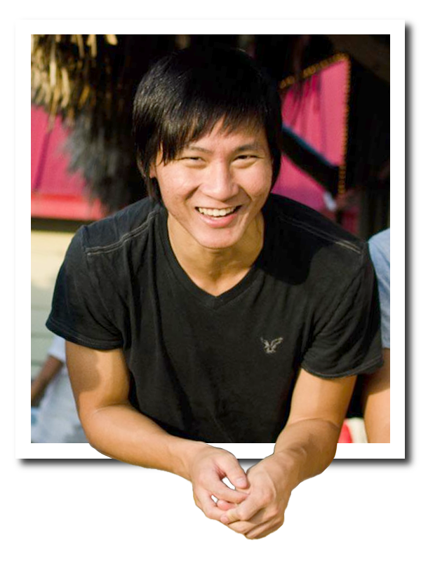

Hey my name is Elfrey Shira, pronounced like the letter "L" followed by the word "free". The most common spelling mistake on my name is "Elfry". Don't forget the "e". Just like you can't forget ME. That stands for Mechanical Engineering, by the way. I enjoy helping people, programming, and solving challenging problems. In my spare time, I like to bike around Austin, eat new food, and procure new v-necks.
- Education
-
The University of Texas at Austin - Austin, TX
Major: Mechanical Engineering Honors
GPA: 3.77
- Experience
-
Indeed.com Software Engineer ▻ Austin, TX ▻ 05/2012 - 08/2012
- Improved the application tracking system
- Integrated Google Closure (JavaScript), Spring (Java), HTML and CSS
- Developed full‐stack features via databases, HTTP requests, and front‐end interaction
- Implemented search highlighting, candidate notes, table sorting, text quality meter, etc.
Mass Relevance Software Engineer ▻ Austin, TX ▻ 02/2012 - 05/2012
- Developed new features on the administrative platform with Ruby on Rails
- Added username search functionality
- Created an Activity page to display the latest activities on customer API and application usage
Speak Social Web Developer ▻ Austin, TX ▻ 09/2011 - 11/2011
- Created web pages for clients that are engaged in social media marketing
- Designed Facebook pages with streaming posts from Twitter and Tumblr
- Transformed the company blog header and footer to match the main website
JPMorgan Chase Application Developer ▻ Houston, TX ▻ 05/2011 - 08/2011
- Developed an application to analyze the growth of a major company database
- Integrated Python and Oracle SQL to seamlessly query and display data in a robust UI
- Discussed the application features with managers to iterate to the final product
The Austin ProjectTutor ▻ Austin, TX ▻ 05/2011 - 08/2011
- Instructed elementary students privately and in-class
- Successfully increased students' mathematical and reading proficiency
- Supervised students during recess to ensure their safety
- Skills
-
Web Development
Javascript (jQuery, Google Closure), Ruby (on Rails), Java (Spring), AJAX, HTML, CSS
Desktop Software Development
Python, SQL (Oracle)
Engineering Design and Analysis
MATLAB for computational anaysis and systems modeling, SolidWorks for 3D CAD design, JMP for statistical analysis
- Hobbies
- Piano, Volunteering, Ballroom Dancing, Biking, Football, Racquetball, Tennis
- References
- Available on request